最开始先掏出我发现的最有意思的聊天记录
必须把这个东西亮出来，哈哈哈哈，原来这么喜欢我哦？！嘻嘻
这是我们最早的聊天记录，现在看笑死我了，你个大色懒子
嘿嘿，那时候我还不知道，
这个大色懒子会成为我后来的全部故事。

宝宝发现我的惊喜啦！！！
我生怕忘记任何一个甜蜜瞬间，
所以我想把它们记一辈子。

最开始先掏出我发现的最有意思的聊天记录
必须把这个东西亮出来，哈哈哈哈，原来这么喜欢我哦？！嘻嘻
这是我们最早的聊天记录，现在看笑死我了，你个大色懒子
嘿嘿，那时候我还不知道，
这个大色懒子会成为我后来的全部故事。
其实在我们真正见面之前，你已经出现过两次。
我发过想去大连的动态，你来找我。
后来我在朋友圈发北京，你又来找我。
但那时候我没有认真看清你。
甚至有点随意地觉得“应该也就那样”，所以没有见。
现在想想，其实不是你不够好，而是我当时还没准备好遇见一个会走进生活的人。
真正见面是在北京。
倒茶、充电宝、递洗面奶……
你那种很自然的照顾，不是讨好，是习惯。
我说我睡不好那次，你没有敷衍，
而是认真地问，是不是因为朋友圈的前任。
那一刻我突然意识到：
真的会有人，在极其认真地看过我的生活。
“这种在乎，比任何喜欢都更快让我放下防备。”
北京之后，我们开始每天聊天。
你不太会表达喜欢，我甚至觉得你没那么在意。
直到那天早上你发了一句：“早哦。”

很普通两个字，我却突然意识到你其实一直在。
后来你说喜欢我，想再抱抱我，好温暖……
“那是我第一次感觉到，我是正在被你坚定选择着的。”
你第一次叫我“老公”的时候，我其实愣了一下。
没有铺垫，没有仪式感，但那一刻我记得很清楚。


后来你工作饭局，我给你点了豆浆、蜂蜜水、电解质水……
我不知道你需要什么，就只能把能想到的都给你。
“那是你第一次，让我认真参与到你的生活里。”
距离见面还有一周。那一天，我过得特别糟糕。
奶茶打翻在床，实验课拖堂，上午吐了，整个人疲惫不堪。
我等了你一整晚，换来的却是一条女团视频。
“要不别见了。” ——其实我只是想让你多看看我。


我嘴硬让你发朋友圈：“吴文强是我真主。”结果你当了真。
后来发现，那不是一次失败的争吵，而是我们在笨拙地宣告：
“其实，我很害怕失去你。”
你真的来了。这是第一次，你来到我的城市。
净月潭喂驯鹿、伪满皇宫……一路上你总喜欢和陌生人聊天。
你特别开朗，特别有生命力。我站在旁边，觉得特别幸福。


见你前我一直紧张，觉得你未必真的那么喜欢我，不敢太主动。
“后来你主动牵我、亲我。那一刻，我终于放心了。”
我一直记得后来我们一起去酒店办理入住的小插曲。
因为房间是闲鱼预订的，前台发现入住信息和我的名字、手机号对不上，便询问起了具体情况。
当时我其实有点尴尬。这种事情并不是什么大事，只是站在前台被一直询问的时候，总会有一点不自在。
就在我还想着该怎么解释的时候，你已经很自然地接过了话。
你没有把问题留给我，也没有让我一个人站在那里解释，而是很平静地和前台沟通，说是朋友帮忙预订的，把事情处理得很自然。
我就在旁边静静地看着你。
那一刻，我忽然觉得，你真的很有担当。
不是因为这件事情有多难解决，而是因为你下意识站出来的样子，让我觉得很安心。
真正让我心动的，从来不是惊天动地的浪漫。
而是在这些很普通、很细微的时刻，你总会习惯性地替我分担一点，让我知道，有些事情不用一直一个人面对。
那一瞬间，我突然觉得，你身上有一种很特别的安全感。
像哥哥一样成熟，可靠，遇到事情不会慌，而是会先想着怎么解决。
后来回想起来，我才发现，原来真正让我越来越喜欢你的，从来都不是一句句情话，而是这些你自己都未必会记得的小细节。
后来，我一直在想，我们之间有没有哪一个瞬间，是真正让我觉得—— 「我没有喜欢错人。」
我想，应该就是那次你来长春的时候。
那天，我带你去看了电影《给阿嫲的情书》。我其实不知道你会不会喜欢，也不知道它会不会触动你。只是觉得，这是一部很温柔的电影，想和你一起看。
电影结束后，我转头看向你，却发现你的眼睛已经哭得通红。
你没有说太多话，只是一直默默擦着眼泪。那不是一瞬间的情绪，而是很久很久都没有停下来的眼泪。
我忽然觉得，原来你比我想象中还要柔软。
你会因为亲情而落泪，会因为一个故事而久久不能平静，也会因为一只小动物的遭遇而心疼很久。
我一直觉得，真正善良的人，不是嘴上说自己善良，而是会因为别人的幸福、遗憾和生命而感同感受。
那一刻，我忽然觉得，我真的没有喜欢错人。
因为我喜欢的人，是一个会认真爱这个世界的人。
这样的你，也让我忍不住想对你好一点，再好一点。
我想照顾你的情绪，照顾你的生活，在你开心的时候陪你笑，在你难过的时候陪着你。
如果可以的话，我希望未来很多很多年，都还能这样牵着你的手，陪你一起看电影，一起笑，也一起流眼泪。
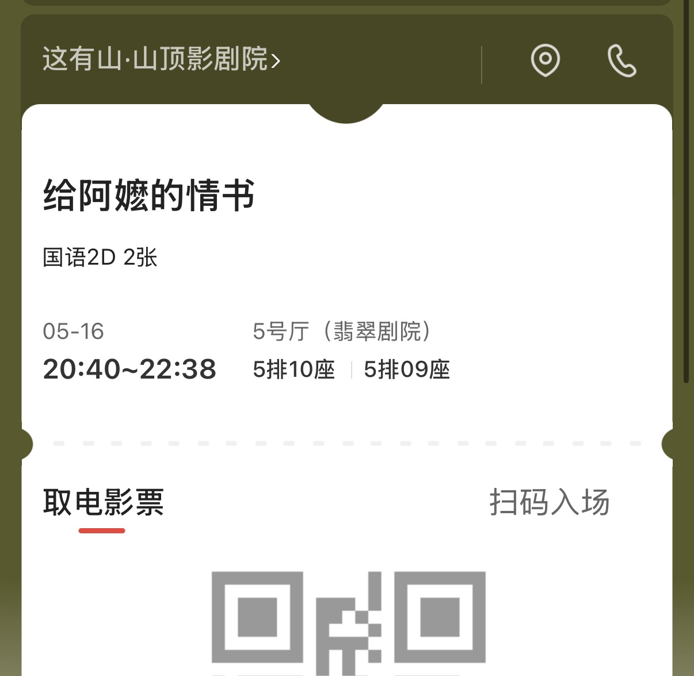
我们一起去了高铁站，吃了酸菜煎肉。东西很好吃，可我却一点提不起兴趣。
进站时特别想亲你，可人很多，我知道你容易害羞，我一直忍着。


独自坐上地铁才发现，你走后心里空了一块。后来我越来越想你。
于是立马给你订了花。不是为了仪式感，只是想说：
“谢谢你来到我的生活，谢谢你来认真爱我。”
你给我打电话，说以前的主管希望你回腾讯。
我们聊了很多，聊工作、聊城市、聊未来。

后来你说：“如果去了深圳，以后我们就很难见了。”
“那一刻我第一次意识到，有人规划未来的时候，已经把我放进去了。”
我飞了两千多公里，去你培训的城市，贵阳。
在咖啡馆等你时，你悄咪咪推门进来，我们对视着，然后一起傻笑。
因为东西太多怕带回去被门卫看到尴尬，你主动去找地下服装店姐姐要了个大袋子，把所有东西打包好。


然后去了白宫拍照。你拍照技术不太好，但真的很认真。
“晚上提着袋子走回住处，夜风很轻，路上只有我们两个人。”
后来几天，你一下课就发消息来找我。我们吃路边摊、贵州菜、酸汤牛肉、烙锅。
你总说“这个好吃，你尝尝”，然后把第一口夹到我碗里。
走的那天你其实已经很困了。吃完饭在回家的车上，你靠着椅背就睡着了。回到酒店，你躺在床上又睡了过去。但你还是撑着陪我到凌晨四点，一定要送我上车。


我抱了你一下，我抱得很紧，但什么都说不出口。我上车之后，透过车窗看到你站在门口，没走。
车子慢慢开远，你还站在那里，一直看着我，直到拐弯。
“贵阳那几天，像一场梦。一个很短的、很甜的、我会记很久的梦。”
异地以后，我慢慢发现，喜欢一个人不仅仅是分享快乐。
更多时候，是学着去接住对方那些不开心的时刻。
那天，你刚从贵阳回来。
晚上应酬结束后，你给我发来了语音条。
点开语音的时候，我就感觉到你和平时不一样。
平时的你总是很乐观，总喜欢逗我开心，好像什么事情都能轻松解决。
可那天，你声音很低，甚至带着明显的哭泣。
你告诉我，这次应酬遇到了一些特别糟糕的事情。
被饭店老板骚扰，被客户骚扰，甚至还因此受了伤。
那些我平时只会在新闻里看到的事情，突然真实地发生在了你的身上。
我第一次听见你用那样委屈的语气和我说话。
后来，你哭了。
隔着一千多公里，我什么都做不了。
我不能抱抱你，也不能陪在你身边。
我只能握着手机，一遍一遍听你说那些委屈。
那天晚上，我特别心疼你。
我突然意识到，北京的生活、工作和应酬，并没有我想象得那么轻松。
原来你也会遇到让自己难受的事情。
原来你也会有撑不住的时候。
也是从那一天开始，我发现自己好像更在乎你了。
不是因为你对我有多好。
而是因为你愿意让我看见你的脆弱。
愿意在最委屈的时候，跟我倾诉。
愿意把那些不开心、那些眼泪、那些说不出口的话，都告诉我。
后来我开始学着，在你说「好累」的时候，多问一句：
“我随时都在！”
谢谢你愿意把最真实的自己交给我。
以后开心的时候陪你笑，难过的时候，我也会一直陪着你。
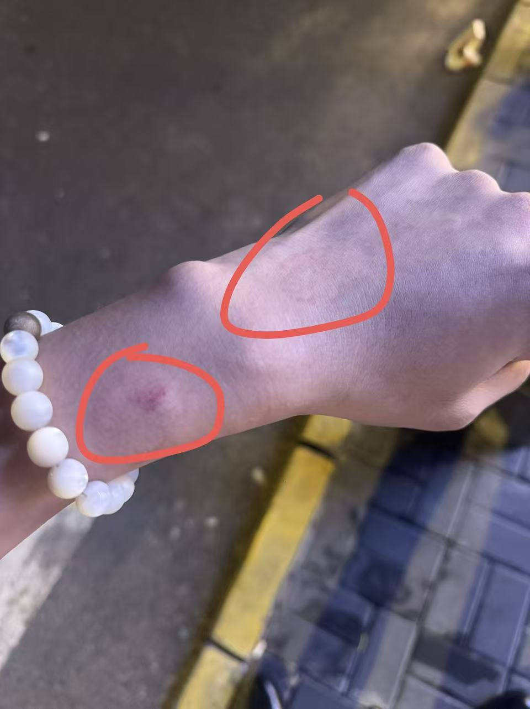
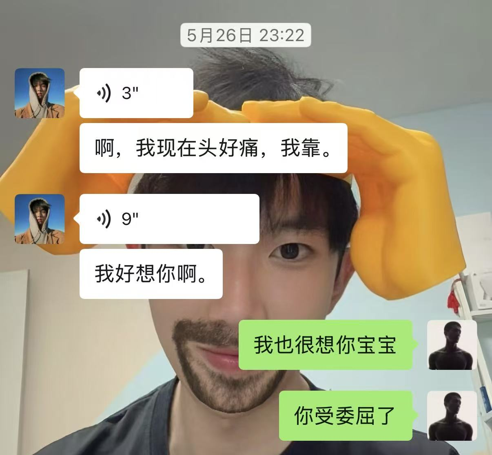
你给我P了一个小芒果，因为我发给你的主播锐评视频里，主播一直说我是个“帅气的小芒果”。
然后你就一直拿这个逗我。我气死了，但又觉得好笑。

你说，这是属于我们俩的专属密语。后来每次发那个芒果表情，我就知道你在叫我。
“不是什么大事。我觉得，能被喜欢人用可爱的方式记住，超级幸福！”
有时候我会觉得，我们之间的爱好像不是那种很张扬的样子。
我总是很容易被情绪带着走，会胡思乱想，也会不安地去确认你是不是还在意我。但你好像不是这样的人，你话不多，但一直在悄悄地做很多事。
家教结束回宿舍，白天刚说不过生日了，深夜却突然接到外卖电话。当我懵懵地站在取外卖的栅栏前，看到你悄悄准备的蛋糕时，我整个人都傻了。


清补凉、衣服、胶片相机，还有那个小柴犬……我特意去搜聊天记录，连我自己都不记得随口说过，你居然一直记到了现在。看到抱枕那一刻，我心里一下子特别酸。
这些东西不是临时起意，更像是你在很早之前就开始一点一点收集的答案。你把我说过的每一句话，都放进了你的准备里。原来你一直都记得，一直都在做，原来你只是没有说。
“不是所有的爱都需要被提前说出来，有些爱是已经发生了，只是我刚刚才看到。”
这个生日对我来说不只是一个生日。它更像是一次确认——确认我说过的话被认真听见，确认我不是一个随口被回应的人，确认有人在用自己的方式，把我放在心上。
“谢谢你，老婆。也谢谢那个慢慢开始看懂你的我。”
生日之后学校放了假，我去找你了。
第二天晚上，我的痔疮突然复发了。
我说是前一晚太亲密导致的，虽然有些哭笑不得，你却没有半点嫌弃我。
我一直说，痔疮膏我自己随便涂一下就好，不用你帮我涂，太尴尬了。但你还是坚持帮我上药，动作轻轻的、慢慢的，生怕弄疼我。
“爱原来不是轰轰烈烈，而是在这种最狼狈、最不起眼的时候，依然有人愿意照顾你、心疼你。”
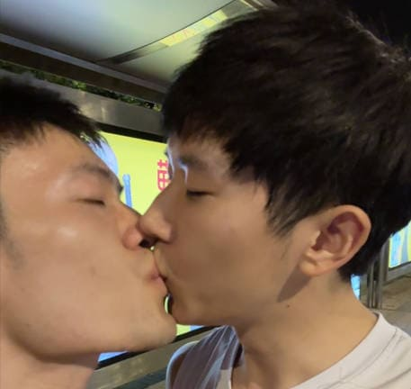
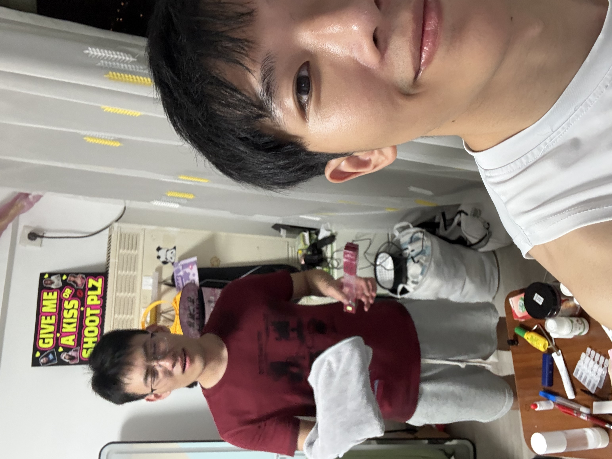
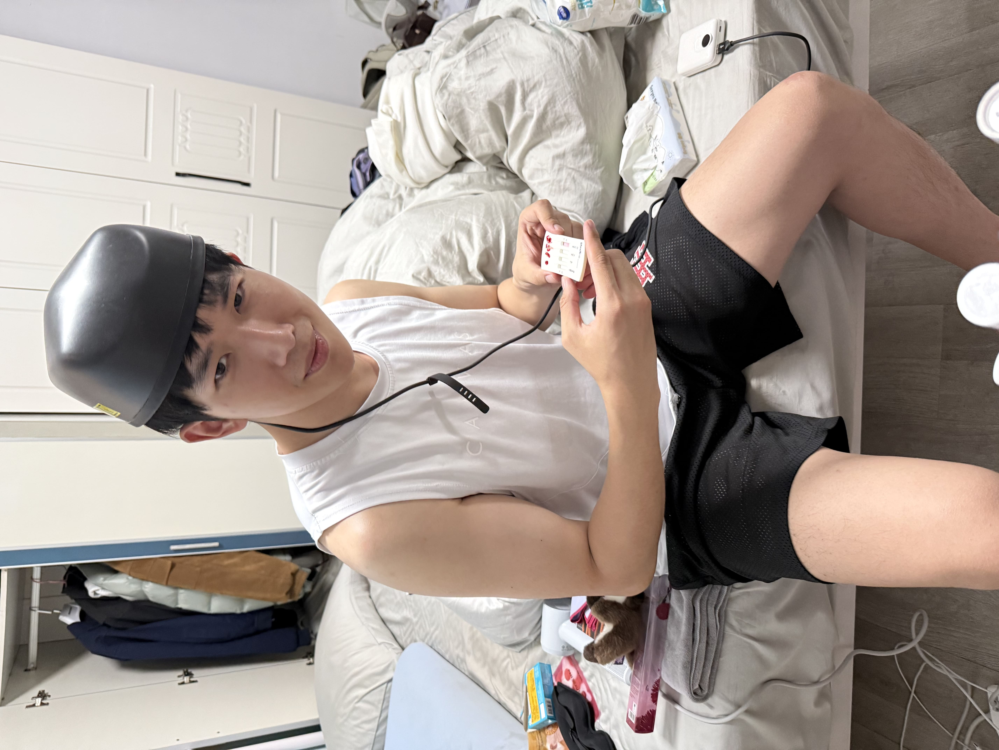
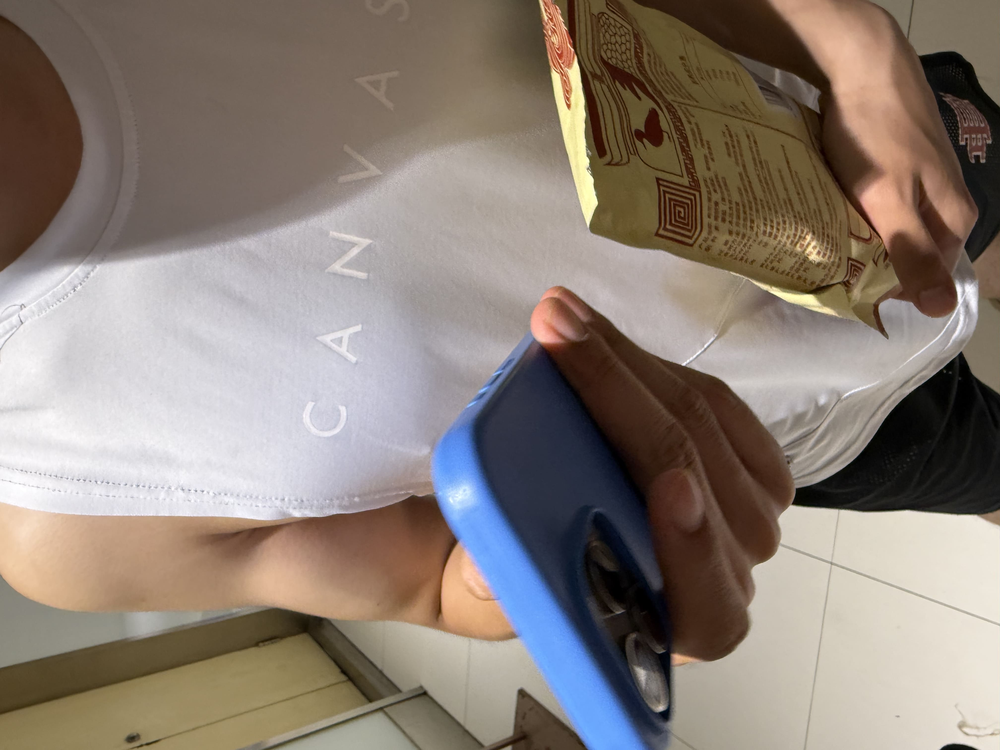
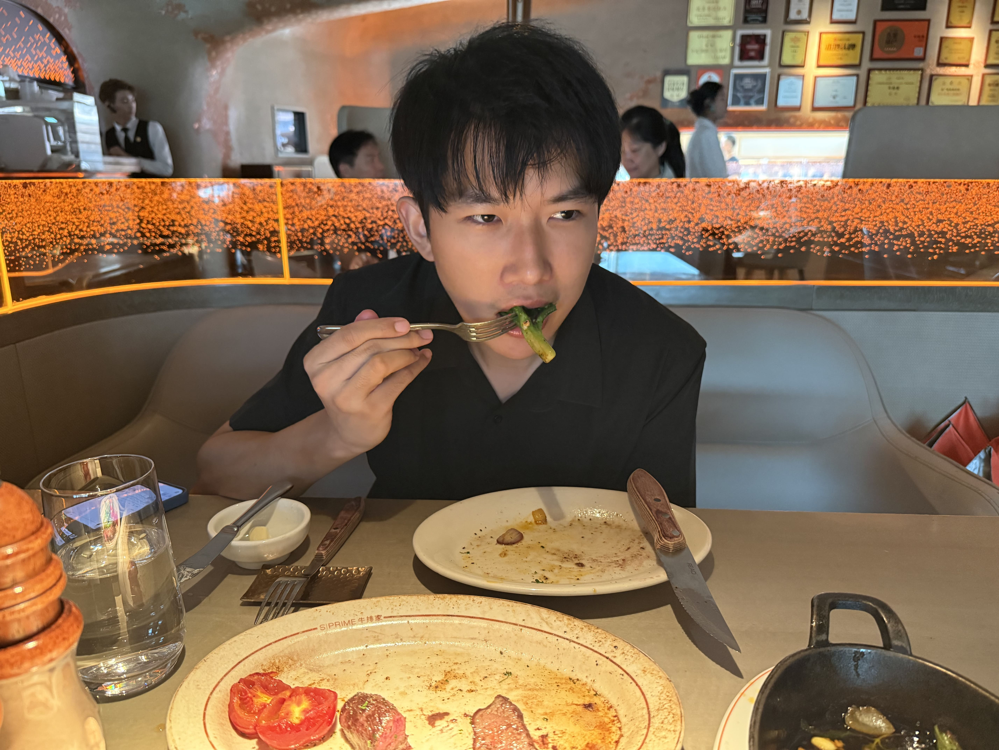
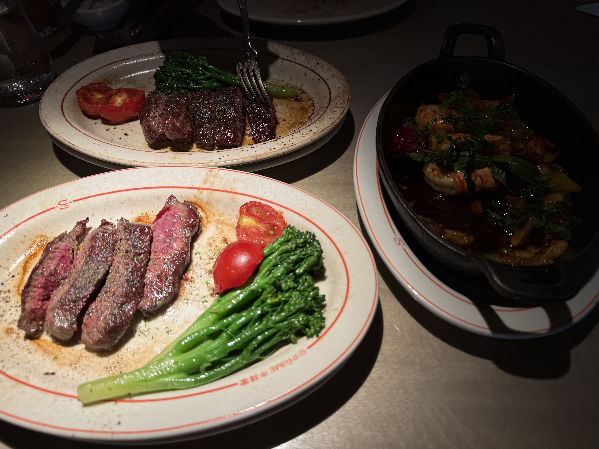
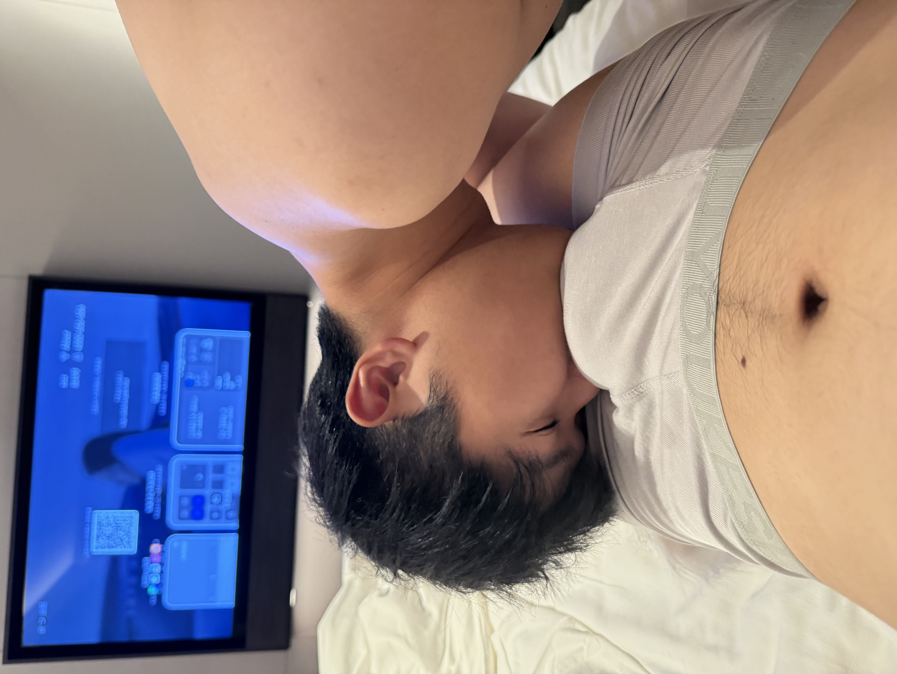
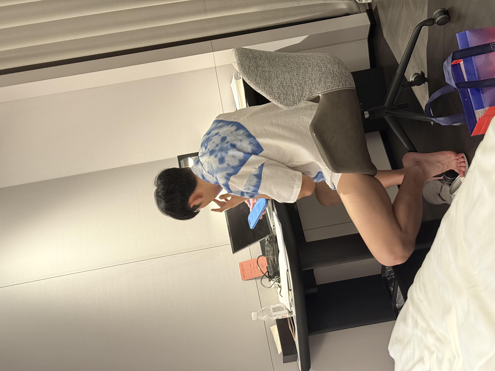
在北京的那几天，我越来越觉得，我们好像真的越来越像一家人了。
我们开始无话不说，开心会分享，委屈会倾诉，生活里的大事小事都会告诉彼此。
每一次争吵，都不会持续太久。谁先难过了，另一个人就会主动靠近；谁先生气了，也总会有人递出台阶。没有冷战，没有输赢，只有一个又一个无声的亲亲，然后又和好如初。
那几天，我每天都跟着你一起去吃好吃的，一起穿梭在北京的大街小巷。
回头想想，那些让我觉得幸福的瞬间，并不是什么盛大的惊喜，而是有人牵着我的手，陪我走过一条又一条街；有人在我最狼狈的时候，也依旧把我放在心上。
“原来，最温暖的爱情，就是把平凡的每一天，都过成了家的模样。”
后来我越来越觉得，我们的故事，不像电影里的轰轰烈烈，反而像生活本身。
不是因为一句“我爱你”，而是因为那些别人觉得微不足道的小事情：


一杯热水 · 一次拥抱 · 一句“早哦”
一次突然回头的吻 · 一束花 · 一封情书
一次高铁站的分别 · 一次深夜的报备
一次未来规划里留给我的位置
一次困到睁不开眼却坚持送我上车的凌晨
一次站在路口目送我直到车子拐弯的背影
还有很多很多……慢慢拼成了现在的我们。
“原来，我们会成为彼此的生活。”
写到这里的时候，我们还在一起。
你还在北京，我还在长春。
你还喜欢 aespa，还喜欢宁艺卓。
我还喜欢给你买东西，还喜欢记住你说的每一件小事。
我们还在学怎么好好爱一个人。
还不完美，还在吵架，还会内耗……
还会在凌晨三点给对方发消息说：“我还没睡。”
但没关系。这本回忆录，我们还可以写很久。
如果有一天，你调去了深圳，或者我毕业去了上海 —— 那我们就再开一个章节。
叫《后来的我们》，或者《终于不用异地了》。到时候你来起名字！
“你才是那个 一下课就发消息来找我 的人。”
“你才是那个 困到睁不开眼，还是坚持送我上车 的人。”
“你才是那个 在朋友圈挂了我一分钟，但是害臊 的人。”
而我是那个，愿意把这些小事，一字一句记下来的人。
因为我们都在认真，成为彼此的生活。
致我最宝贝的老婆大人：
陪你走过的每一步，记下的每一件小事，都是我这辈子最珍视的宝藏。
“如果可以，我想陪宝宝度过余生所有的生日。”
未来的日子还很长，不管是长春的雪、北京的墙，还是深圳与上海的未来，我都想一直在你身边。